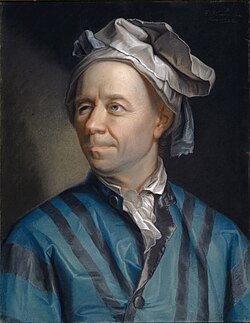

1707-1783
Leonhard Euler

Portrait: Jakob Emanuel Handmann, Public domain, Wikimedia Commons.
Events (23)
- 1656Wallis: interpolation and infinite products
developer · Analysis
- 1670Fermat's number theory (little theorem, sums of squares, Fermat correspondence)
originator · Number theory
- 1690Differential equations from calculus and mechanics
systematiser · Differential equations
- 1694Elliptic integrals from lemniscate and elastica (Bernoulli)
developer · Analysis
- 1696Calculus of variations from the brachistochrone
developer · Optimization & control
- 1702Trigonometry and the exponential: Cotes, De Moivre, Euler
developer · Analysis
- 1707De Moivre: probability and the trigonometry-complex number link
developer · Probability
- 1714Cotes: logarithm of complex arguments
developer · Complex analysis
- 1722De Moivre's formula: trigonometry and complex powers
developer · Analysis
- 1731Clairaut: curves in space
developer · Differential geometry
- 1732Euler: geodesics from mechanics
developer · Differential geometry
- 1741Graph theory from the Königsberg bridges
developer · Graph theory
- 1741Topology from the geometry of position (Euler to Listing)
developer · Topology
- 1744Analytic number theory I: Euler's product and Dirichlet's characters
developer · Number theory
- 1748Euler's Introductio in analysin infinitorum
developer · Analysis
- 1748Euler: complex logarithms and exponentials
developer · Complex analysis
- 1749D'Alembert and Euler: the wave equation and partial differential equations
developer · Differential equations
- 1750Vibrating-string controversy and the general function concept
developer · Differential equations
- ≈ 1751Spectral ideas: eigenvalues from vibrating systems and quadratic forms
developer · Algebra
- 1757Euler formulates the equations of fluid motion
originator · Fluid mechanics
- 1758Euler's polyhedron formula (V - E + F = 2)
developer · Topology
- 1767Differential geometry of surfaces (Clairaut, Euler, Monge, Gauss)
developer · Differential geometry
- 1788Lagrange's analytical mechanics
developer · Mathematical physics